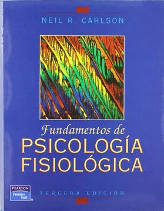

📚 Volver al Catálogo
📚 Volver a la Galería
W. Wundt
Fundamentos de psicología fisiológica
- Sinópsis:
-
"Fundamentos de psicología fisiológica" es una obra seminal que sentó las bases para el establecimiento de la psicología como una disciplina científica independiente. Wundt argumenta que la psicología debe estudiar la experiencia inmediata a través de la introspección controlada y el método experimental, buscando las conexiones entre los procesos mentales y los fisiológicos. El libro explora temas como la sensación, la percepción, la atención, el tiempo de reacción y las asociaciones, intentando identificar los elementos básicos de la conciencia y las leyes que rigen su combinación. Wundt aboga por un enfoque que integre la observación introspectiva con la investigación fisiológica para comprender la complejidad de la vida mental.

- Detalles de Publicación:
- Escrito: La primera edición se publicó en 1873-1874 en dos volúmenes. Wundt continuó revisando y expandiendo la obra a lo largo de su carrera, publicándose varias ediciones posteriores.
- Publicado: Originalmente en alemán con el título "Grundzüge der physiologischen Psychologie". Su publicación marcó un hito crucial en la historia de la psicología, ya que se considera una de las primeras obras que definieron el campo de la psicología experimental.
- Más libros de Wundt aquí
⬆️